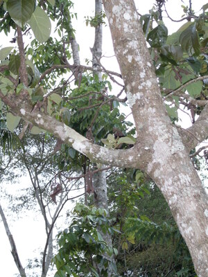

sugpang 
/sugpaŋ/
n.
“branch”
1.
n.
branch (of a tree)
Wrd.Gloss: branch
Ka seini ne lalag iyan sika se diyè egtubu te lawwa te kayu ne sumpul din ded ne egpakabalabag ne egderewun ded degma seini deisek wey dakel, iyan pinarakel ka diyè te lebut ne egdereisek e ka pehendiyad e te uud.
Mamatul-id ka sugpang te Akasiya ne kayu.
The branches of the Acasia tree are straight.
Eng. branch
Tag. sangá
Ceb. sanga
Ilo.: sangá
OCM: Ethnogeography (823)
DDP: Parts of a plant (1.5.5)
Online dict status: -
Usage level: M
2.
n.
bud or shoot (of a plant)
Ka seini ne lalag iyan sika se sikan pad egsibul ka tubù te sugpang ka egkhiyen te me duma ne egmamata pad.
Egsibul e ka tugbung te nangka ne pinamula ta.
The bud eye is growing of our planted nangka.
Data Qual: example sentence doesn't fit here
Syn. tubù
Syn. tugbung
Eng. bud; shoot; sprout
Tag. súpang
OCM: Ethnogeography (823)
DDP: Parts of a plant (1.5.5)
Online dict status: -
Usage level: B
Updated by: RJH,QDL,NJK,RJH
Last updated: 03/Sep/2012
"sugpang" in healthbook "Nahepu ka belad ni Binuy"
This page last updated: 03-Jan-2020
Copyright © 2009-2014, Matigsalug Language Christian Association, Inc